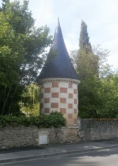
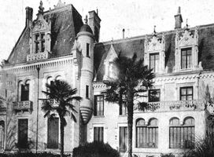
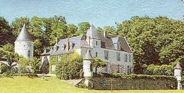
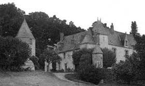
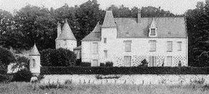
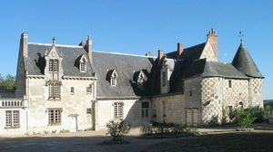
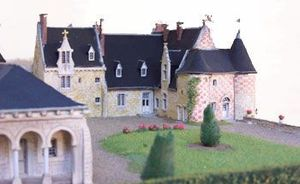
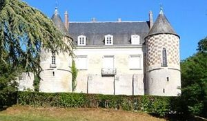

Recensement Jean-Claude Truffet
| Département | 37 — Indre-et-Loire |
| Canton | St-Cyr sur Loire |
| Commune | Fondettes |
| Type d'édifice | Château |
| Période d'origine | XV |








Trois châteaux dans cet article de Fondettes, le château de Bel-air, le Grand-Martigny et Chatigny. BEL-AIR, ancienne closerie transformée en maison de maître. L'ancien cellier construit en pierre de taille et moellon date du milieu du XVIIIe siècle. La maison de maître et ses annexes furent reconstruite entre 1882 et 1890 pour Raoul de Gourjault, dans le style des maisons seigneuriales tourangelles, de 1485 à 1520, employant des pierres et des briques, soit en damier, soit en tapisserie de brique encadrée de pierre de taille. L'édifice devient école normale d'instituteurs d'Indre et Loire en 1946. Les bâtiments de service créés entre 1950 et 1960, emploient le béton armé. Le château abrite aujourd'hui l'Institut de formation des maîtres. GRAND-MARTIGNY, en 1269, Jean de Pontlevoy, dit Genesson, était maire de Martigny. Après lui on trouve, en 1314, N. Odard; en 1338, Aimery Odard; en 1348, Thibault de Laleu; en 1400, N. Le Maignan, chanoine, qui donna ce fief aux vicaires de Saint-Martin. Ceux-ci le vendirent, le 11 juin 1430, à Pierre Chauvin. Ce dernier eut pour successeurs: Jean Chauvin, 1472; Charles Chauvin, 1491; Julien Godeau, 1493; Gilles Chauvin, 1500; Pierre Chauvin, 1533; René Chauvin, 1547; Marie Chauvin, veuve de Pierre de Montigny, 1563; Louis le Boucher, 1572. La mairie de Martigny fut possédée par cette dernière famille jusqu'à la Révolution. Manoir du XV-XIXe siècle avec pigeonnier carrée et parc transformé en chambres d'hôtes par la famille Desmarais.
CHATIGNY, la construction date de 1487. Il est de style Renaissance et néo-Gothique. Son propriétaire initial était Jean Quétier, maire de Tour. il se compose de deux ailes en retour d'équerre cantonnées de tours rondes et d'une courtine prolongeant l'aile Est, fermant la cour au nord. Accolée au pignon nord, cette aile est prolongée d'une partie plus haute, orné de damiers, sur des bases anciennes car les murs en sont épais. La courtine nord est percée d'une porte fortifiée de plain pied, le pont-levis a disparu. Des communs néo-gothiques ont été rebâtis vers l'ouest. La courtine ouest a disparu après le XVIIIe siècle pour ouvrir la cour vers les jardins et le parc situé au delà. Les murs en pierre de taille de grand appareil, sont ornés, au niveau des pignons et dans les parties hautes des tours, d'un décor de damiers en brique et pierre. De rares baies conservent leur décor de la fin du XVe siècle, d'autres ont été percées ou agrandies au XIXe siècle. Les façades intérieures sont éclairées par des baies toutes reprises ou créées fin du XIXe siècle, dans un style néo-gothique flamboyant. La courtine nord-est a été pourvue d'un crénelage et son portail a été en partie reconstruit. Un niveau de terrasse a été aménagé et s'étend à l'ouest. Le parc paysager règne à l'ouest et au nord. Restauré entièrement en 1855 par le duc dUlceda et dEscalona.
Bel-Air Raoul de Gourjault Chatigny; Famille de Jean Quétier Grand-Martigny Famille Desmarais.
"
Trois châteaux à Fondettes le château de Bel-air grav-2, le Grand-Martigny grav 3-4-5 et Chatignygrav 6-7-8. Chatigny 47° 23' 25" Nord, 0° 35' 22" Est